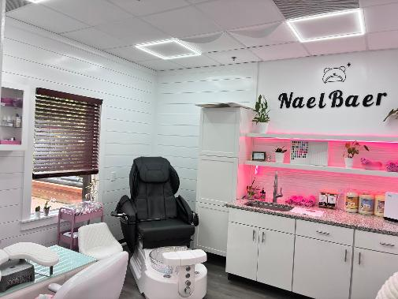

Basic packages, Design Packages and Enhancements
Find the perfect ritual
Step into an imersive experience at one of the newest additions to the Salon Suites on Main Street Station in Pitsboro, North Carolina. Whether you want a minimal clean basic manicure and pedicure or if you are seeking the newest design trends. Nael Baer Private Nail studio is now open to accomadate with our full service menu. Indulge in a botanical pedicure packaged with massage, warm towels and collagen foot masks. We also have the perfect packages for Brides to be and Special Events. Get the "cure" for pretty nails.
To explore services, pricing, and booking availability, visit the official NaelBaer Nail Studio page.
Visit NaelBaer.com